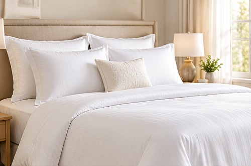
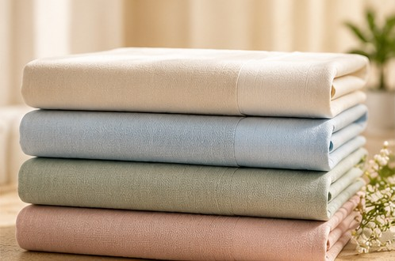
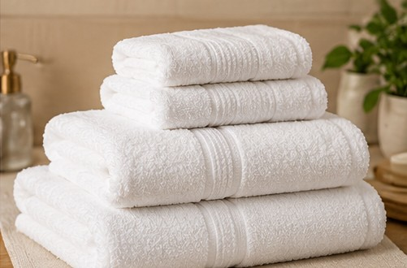
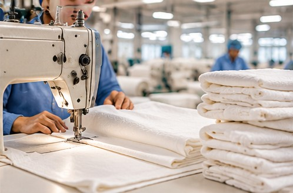
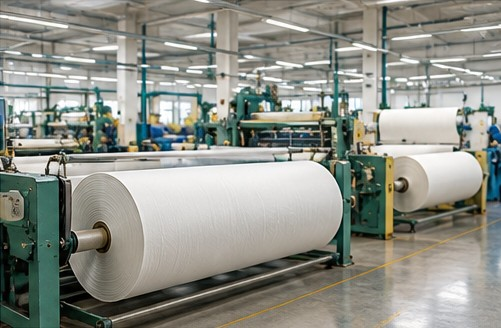

Textiles for
everyday living.
We are committed to quality, innovation and responsible practices that help us deliver textiles bringing comfort, style and value to everyday life.
Manufacturing in Faisalabad since 1989

Made for the
spaces we live in.
From home textiles to apparel fabrics, our products are designed to bring comfort, quality and style to every aspect of life.

Home Textiles
Comforter sets, bed linen, towels and essentials for better living.
View products
Fabric
High-quality fabrics for multiple applications and industries.
View products
Hospitality
Premium textiles for guest comfort and hospitality programmes.
View products
Garments & Apparel Fabrics
Reliable fabric options for modern apparel projects.
View products
Built from
the yarn.
Weaving, processing and stitching work together through our Faisalabad operations, giving every range a clear connection from first thread to finished textile.
Explore our facilitiesMade for the
way people live.
From vibrant home textiles to refined hospitality linen, our collections bring comfort, elegance and quality to everyday life.
A trusted name in textile manufacturing.
We are a leading textile manufacturer from Faisalabad, committed to delivering high-quality fabrics and finished textiles for homes, hospitality and apparel.
Learn more about us
Modern facilities.
Greater possibilities.
Our production route combines weaving, processing, quilting, embroidery, cutting and stitching to support consistent quality and flexible textile programmes.
Explore our facilitiesTrusted by
global brands.
We work with leading brands and retailers around the world, building long-term relationships through trust, quality and shared values.
Let's work together.
For inquiries, partnerships or bulk orders, our team is here to help.
Contact us